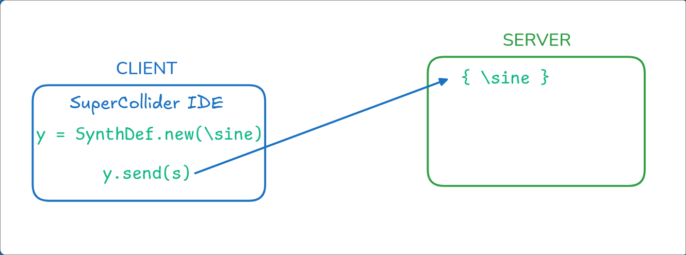
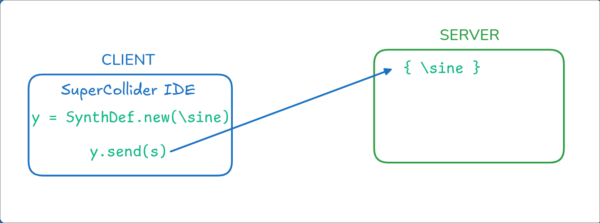
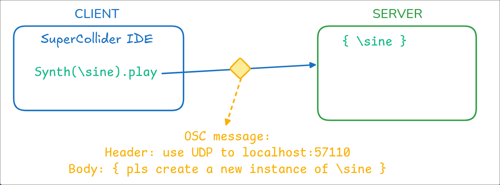
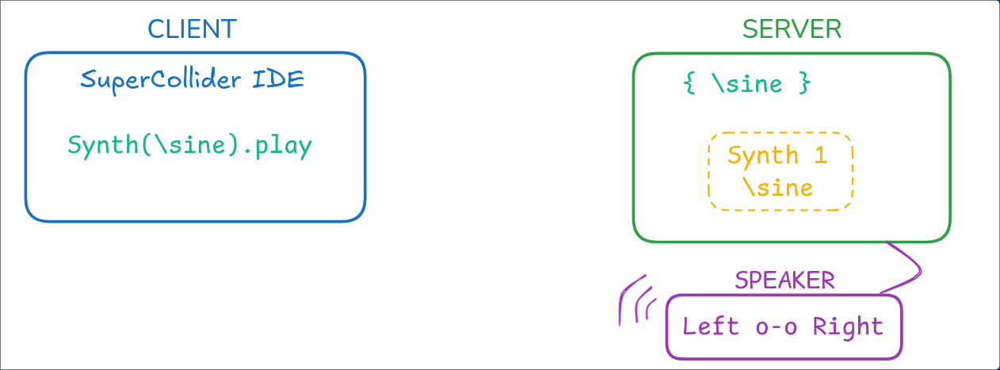
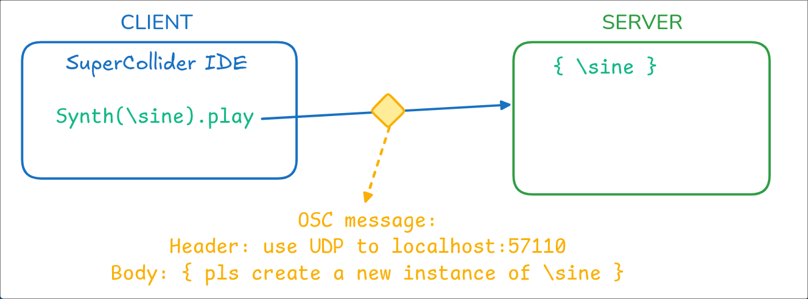
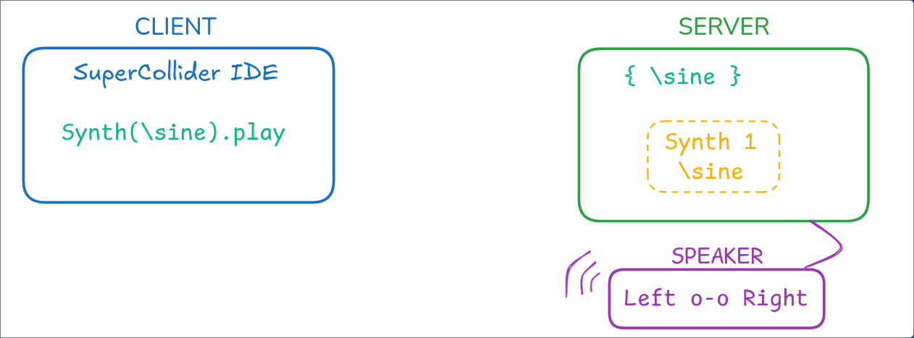

Music Tech Workshop
Open Sound Control (OSC)
& SuperCollider
by Antoine (@notkaramel)
Sections
Why use OSC? What is SuperCollider
1. Install ~ 2. Getting Started
3. SC Basics ~ 4. Synth & SynthDef
5. Signal Processing ~ 6. Envelope
7. Output & Panning ~ 8. Server, OSC
9. Extras
🌟 Game time! 🌟
Prerequisite knowledge
It is recommended that you have some background knowledge on
- Object Oriented Programming (OOP)
- Signal processing
- The client-server architecture
- Network protocol (UDP, HTTP, TCP)
Links
Project Presentation:
https://notkaramel.github.io/MUMT306/Project Source Code:
https://github.com/notkaramel/MUMT306What is Open Sound Control?
Why use OSC?
Why not use MIDI???
What is SuperCollider?
"What is Open Sound Control?"
Open Sound Control (OSC) is a communication protocol for computers, sound synthesizers, and other multimedia devices that is optimized for modern networking.
OSC Proposal at ICMC, 1997
OSC is designed as a highly accurate, low latency, lightweight, and flexible method of communication for use in realtime musical performance.
OpenSourceControl website
"Why use OSC?"
"Why not use MIDI?"
In a way, OSC is a more flexible alternative to MIDI.
MIDI is a protocol standard made for hardware synthesizer with electrical circuit limitations. Meanwhile, OSC travels through the internet via UDP (or User Datagram Protocol).
"What is SuperCollider?"
In this workshop, we will not go into the encoding of OSC and all the nitty gritty details of it.
We will use a program called SuperCollier to use and interact directly with OSC and create an application using it.
Step 1: Get SuperCollider
Download SuperCollider (Windows, Linux, MacOS): https://supercollider.github.io/downloads.html
For the command-line enthusiasts
choco install supercollider # Windows
apt install supercollider # Debian-based
pacman -S supercollider # Arch-based
brew install --cask supercollider # MacOS
Let's make a Hello World program.
"Hello World!".postln;
Press Ctrl Enter or Cmd Enter
You should get this on the post window.

Documentation
SuperCollider has a very extensive documentation.
You can access it by pressing Ctrl Shift D or Cmd Shift D

Documentation
You can also access the documentation of a function by
Ctrl D or Cmd D with the cursor on the code.
Step 3: SC Basics
Let's start with making a sinusoid wave!
{ SinOsc.ar(440, 0, 0.2) }.play;
3.1. Create a SinOsc object with the params:
SinOsc.ar(440, 0, 0.2);
You can always check the documentation:

3.2. Wrap the oscillator with curly brackets.
You now have a Function
{ SinOsc.ar(440, 0, 0.2) };
3.3. You can add .play to play the Function to make it play the sound!
{ SinOsc.ar(440, 0, 0.2) }.play;
3.4. Press Ctrl Enter or Cmd Enter
with the cursor on the line to play the sine wave
{ SinOsc.ar(440, 0, 0.2) }.play;
It's a pure A4 signal!
Oh and,
Ctrl B / Cmd B to start the SC local server!
3.5. Press Ctrl . or Cmd .
to stop the audio playing
{ SinOsc.ar(440, 0, 0.2) }.play;
3.6. Variables
Single character : a = {...}
not recommended because there are reserved/default
variable (s for server)
Long word
~myThing = ...
or
var myThingy2 = ...
can follow any naming convention, very flexible
Step 4
Synth & SynthDef
Remember OOP?
SynthDef
// Create a new Synth Definition
SynthDef.new(\name, {Function});
// Add (Sending) the SynthDef to the server
SynthDef.new(\name, {Function}).add;
SynthDef - Example
// Create a new Synth Definition
SynthDef.new(\Sinusoid, {
var freq = 440; // A4
var sinFunc = SinOsc.ar(freq)
Out.ar(0, sinFunc);
}).add;
We will learn about Out function soon!
SynthDef - Example
To run a large section of code, you can add parenthesis at the beginning and the end of the block to run it!
(
// Create a new Synth Definition
SynthDef.new(\Sinusoid, {
var freq = 440; // A4
var sinFunc = SinOsc.ar(freq)
Out.ar(0, sinFunc);
}).add;
)
Synth - Example
x = Synth(\Sinusoid);
// free the UGen when you're done
x.free; // or `Ctrl .` / `Cmd .`
Notice the status bar!
SynthDef - Arguments
To add argument(s) to your SynthDef, there are two ways to do it.
#1: Use arg for variable(s)
(
// Create a new Synth Definition
SynthDef.new(\Sinusoid, {
arg freq = 440; // A4
var sinFunc = SinOsc.ar(freq)
Out.ar(0, sinFunc);
}).add;
)
SynthDef - Arguments
To add argument(s) to your SynthDef, there are two ways to do it.
#2: Use the pipe symbol | variable |
(
// Create a new Synth Definition
SynthDef.new(\Sinusoid, {
| freq = 440 | // A4
var sinFunc = SinOsc.ar(freq)
Out.ar(0, sinFunc);
}).add;
)
Synth - with Arguments
x = Synth(\Sinusoid, [\freq, 400]);
x.set(\freq, 600);
// Having multiple arguments?
x = Synth(\OtherSinusoid, [\freq, 400, \amp, 0.4]);
🎉 Congrats! You've mastered the basics of SuperCollider IDE!
Step 5
Signal Processing Basics
5.1. Basic functions
\[\begin{aligned} & \text{Sine Wave: } x(t) = A\sin(2\pi ft + \phi) \\ & \text{Pulse Train: } x(t) = \sum_{n=-\infty}^{\infty} A\cdot \text{rect}\left(\frac{t-nT}{T_p}\right) \\ & \text{Saw Tooth: } x(t) = \frac{A}{T}t - \left\lfloor \frac{A}{T}t \right\rfloor \\ \end{aligned} \]
How can you implement those in SuperCollider??
5.1. Basic functions
in SuperCollider
\[\begin{aligned} & \text{Sine Wave: } x = SinOsc.ar(f,\phi,Amp) \\ & \text{Pulse Train: } x = Pulse.ar(f, width, Amp) \\ & \text{Saw Tooth: } x = Saw.ar(f,Amp) \\ \end{aligned} \]

// Brown Noise
BrownNoise.ar(mul: 1.0, add: 0.0);
// White Noise
WhiteNoise.ar(mul: 1.0, add: 0.0);
// Step Noise
LFDNoise0.ar(freq: 500.0, mul: 1.0, add: 0.0)
// Pink Noise
Pink.ar(mul: 1.0, add: 0.0);
5.2. Signal Manipulation
Amplitude Modulation (AM)
\[\begin{aligned} & X_{carrier} = M\sin{2\pi f_{carrier}t} \\ & x(t) = A \cdot X_{carrier} \sin{(2\pi ft+\theta)} \\ \end{aligned} \]Frequency Modulation (FM)
\[\begin{aligned} & X_{carrier} = M\sin{2\pi f_{carrier}t} \\ & x(t) = A \sin{(2\pi f\cdot X_{carrier}t+\theta)} \\ \end{aligned} \]5.2. Signal Manipulation
Additive & Subtractive Synthesis
\[\begin{aligned} & x_1(t) = A_1 \sin{(2\pi f_1t+\theta_1)} \\ & x_2(t) = A_2 \sin{(2\pi f_2t+\theta_2)} \\ & x_{out}(t) = x_1(t) \pm x_2(t) \\ \end{aligned} \]
{
var freq = 200, amp = 1;
SinOsc.ar(freq, 0, amp)
+ SinOsc.ar(freq*2, 0, amp/2)
+ SinOsc.ar(freq*4, 0, amp/4)
}.play;
5.3. Scopes
SuperCollider has built-in scopes to help us visualize our signals
// s is the server variable.
// Here we want to use the time scope
s.scope;
// There is also a Spectrum Analyzer
FreqScope.new(width: 522, height: 300, busNum: 0,
scopeColor, bgColor, server)
// Create a FreqScope for Bus 0 on our current server, 500x400
FreqScope(500, 400, 0, s);
Step 6
Let's make a note!
with Envelope 💌
Envelope function: Env
In essence, an envelope is a function that changes the amplitude of a sound over time. It puts the sound in an "envelope" of sorts, hence the name.
There are many ways to create an envelope in SuperCollider.
Envelope function: Env
Env.new(
levels: [0, 1, 0.9, 0],
times: [0.1, 0.5, 1],
curve: 'lin'
).plot;

Using Envelope function: EnvGen
The EnvGen function is used to generate an envelope.
You can think Env is the blueprint or specifications of the envelope,
while EnvGen is the instance that you can use.
Env example
~envFunc = Env.perc(0.2, 0.7, 1.0, -3.0);This is also called an Attack-Release envelope
Types of envelope
For more types of envelope, you can check the
SuperCollider documentation.
Additionally, you can checkout the basics and types of envelope at https://thewolfsound.com/envelopes/
Types of envelope: ADSR
ADSR is the most common type of envelope,
commonly seen in a lot of digital audio workstation (DAW)
Env.adsr(attackTime: 0.01, decayTime: 0.3, sustainLevel: 0.5, releaseTime: 1.0, peakLevel: 1.0, curve: -4.0, bias: 0.0)
 https://blog.native-instruments.com/adsr-explained/
https://blog.native-instruments.com/adsr-explained/
Using Envelope function: EnvGen
EnvGen.ar(
envelope,
gate: 1.0,
levelScale: 1.0,
levelBias: 0.0,
timeScale: 1.0,
doneAction: 0
);
For the scope of this workshop, we will only look into the envelope function and the
doneAction parameter.
doneAction parameter
doneAction: Done.freeSelf;This parameter tells the server what to do when the envelope is done.
Done.freeSelf means that the "note" will be freed when the envelope is done.
This concept in SuperCollider is called nodes (node objects) on the server.
EnvGen example
~envFunc = Env.perc(0.2, 0.7, 1.0, -3.0);
EnvGen.kr(~envFunc, doneAction: Done.freeSelf);
Making a note
(
{
~envFunc = Env.perc(0.2, 0.7, 1.0, -3.0);
~env = EnvGen.kr(env, doneAction: Done.freeSelf);
SinOsc.ar(440) * env;
}.play
)
Step 7
Output channels & Panning
Spatialized Audio!? 🎧
Channel / Bus
Generally, most generic computers has two output channels:
the left channel (Bus 0) &
the right channel (Bus 1).
// to see the channels
s.meter
// Output a synth
Out.ar(bus:0, mySynth);
Out.ar(bus:1, mySynth);
Why do we need the Out function?
Out function
The Out function is used to output the sound to a specific channel.
Out.ar(bus:0, mySynth);mySynth to the left channel.
This is particularly useful for multi-speaker setup!
Multichannel Expansion
We can create a function with multiple audio channels by using the array syntax.
// one channel
{ Blip.ar(800,4,0.1) }.play;
// two channels in an array
{ [ Blip.ar(800,4,0.1), WhiteNoise.ar(0.1) ] }.play;
// two frequencies in an array
{ SinOsc.ar([440, 880], 0, 0.2) }.play;
Multichannel Expansion + Out
We can make the Out function output to multiple channels using multichannel
expansion.
(
{
~sound1 = Blip.ar(800,4,0.1);
~sound2 = WhiteNoise.ar(0.1);
// the explicit way
Out.ar([0,1], [~sound1, ~sound2]);
// using multichannel expansion
Out.ar(0, [~sound1, ~sound2]);
}.play;
)
Multichannel Expansion + Out
// using multichannel expansion
Out.ar(0, [~sound1, ~sound2]);
All sounds are expanded from channel 0 to the next channels.
What if you have more sound functions than channels?
The sound(s) on unavailable channel(s) will not be played!
The Pan2 function
Pan2.ar(in, pos: 0.0, level: 1.0)
where in is the output sound,
pos is the relative position to the center
(-1 is left, +1 is right)
A complete example
// Making a note
(
SynthDef(\MyNote, {
| freq = 550, amp = 0.5 |
var rootOsc = SinOsc.ar(freq, 1, amp);
// Envelope the sound
~envFunc = Env.perc(0.2, 0.7, 1.0, -3.0);
~env = EnvGen.kr(env, doneAction: Done.freeSelf);
// Equally panned on both channels
sound = Pan2.ar(sound, 0, 1);
}).add;
)
[tangent] Spatialized Audio
To achieve spatialized audio, we need more than just panning with Pan2.
Ambisonics is a technique to achieve spatialized audio.
It uses concepts such as W, X, Y, Z to represent the sound in a 3D space.
SuperCollider Ambisonic Toolkit: doc.sccode.org/Guides/Intro-to-the-ATK.html
[tangent] Spatialized Audio
Head-related transfer function (HRTF) is another technique to achieve spatialized audio.

Step 8
OSC message & scsynth Server
Brace yourself!
The client-server architecture


 



 





sclang.
How can you interact with the server?
How can you encode an OSC message?
What can you do with all of these knowledge?
The scsynth server
The scsynth server is the server that runs the SuperCollider synthesis engine.
By default, it runs on localhost:57110
SuperCollider IDE default server variable is s.
s.addr; reveals the local address Interact with the scsynth server
// Boot the server
s.boot;
// Show the server address & port
s.addr;
// Quit the server
s.quit;
// Show the server output scope (time vs amplitude)
s.scope;
// Show the server input & output meter
s.meter;
OSC encoding schema
OSC follows a schema as follows:
/address, [values] /address, [tags, arguments]
Example: to create a new synth with the name "sine"
/s_new, ["sine"]
On the SuperCollider IDE
The IDE provides client-side code that allows user to send OSC messages
By default, it uses the s server (localhost:57110)
~mySine = SynthDef("sine", {...}).add;
// is equivalent to
~mySine = SynthDef("sine", {...});
~mySine.send(s);
// write SynthDef to disk. .send(s) doesn't write to disk
~mySine = SynthDef("sine", {...}).load(s);
On the SuperCollider IDE
To play a Synth:
// play a Synth "\sine" with "freq" augument 900
// x is used to keep track of the node number
s.sendMsg("/s_new", "sine",
x = s.nextNodeID, 1, 1, "freq", 900);
// to change the frequency of the Synth
s.sendMsg("/n_set", x, "freq", 400);
// to free the node
s.sendMsg("/n_free", x);
Usage of OSC outside of SuperCollider
OSC allows you to control the synthesizer server from a different program, or even a different machine!
We will use python-osc for our game later!
Step 9
Extras
Just a brief introduction to the endless possibility
you can do with
SuperCollider.
sclang
sclang is the SuperCollider language interpreter. It behaves similarly to Python.
You can run .scd files using sclang on the terminal.
sclang mysynth.scdLoad different SuperCollider files
You can also load multiple different files with SynthDefs.
"mySynth1.scd".load;
"mySynth2.scd".load;
Loop, repeat, & Routine
You can set up repeated tasks in SuperCollider using
a n.do(),
a Routine, .loop, or .repeat() methods.
20.do({ |i|
i.postln; // print all numbers from 0 to 19
});
[1, 5, 3].do({ |i|
i.postln; // print out 1, 5, 3
});
t = Task({ { "Yippee".postln; 1.wait; }.loop});
t.start;
t.stop;
wait
You can set up a time pause between events or tasks using the .wait method
inside a Task or a Routine.
wait
t = Task({
{
"Yippee".postln;
1.wait; // wait for 1 second
}.loop});
t.start;
t.stop;
x = Routine(
10.do({
"Howdy".postln;
1.wait; // wait for 1 second
});
)
x.play();
MIDI
SuperCollider can also interact with MIDI devices, uses MIDI standards, etc.
~E4midi = 64.midicps; // convert MIDI note to frequency
MIDIClient.init; // Start the MIDI client
MIDIIn
MIDIOut
MIDIFunc
Application
Let's make a game!
Play the game
Make sure you have a running SuperCollider server at localhost:57110.
Run the game from the command line with
(.venv) python game.py
Use arrow keys to move the running blobby.
Press Space to spin.
Thank you for attending the workshop!
🎉 🎉 🎉
Any questions?